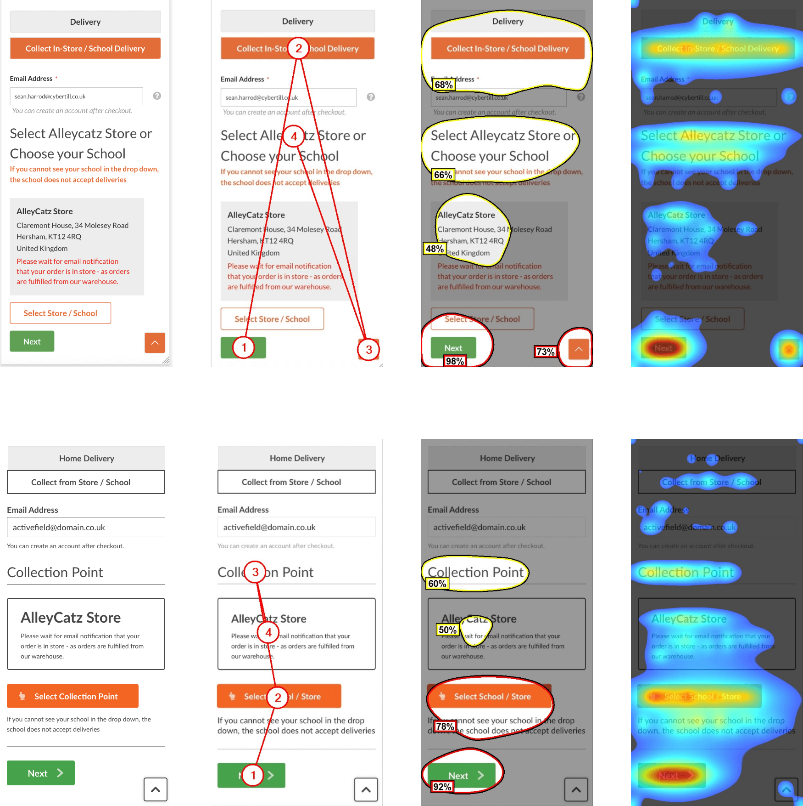

AlleyCatz: Schoolwear eCommerce Redesign
AlleyCatz is a schoolwear company with a business model where parents are required to buy uniforms only from them, so advertising wasn’t a major focus for this project. The key goal was to make it as easy as possible for users to find their school, browse the required clothing, and place an order without any hassle.

Design Approach
We decided to structure the website around schools as categories, making them searchable and visually represented on a catalogue page with each school’s badge. Since the number of schools was fairly small, we opted not to add an A-Z filter, keeping the page simple and user-friendly.
The client also wanted flexibility to customise each school’s section. To address this, we added widgets for imagery, the school badge, and key details, allowing AlleyCatz to tailor these areas to fit each school’s needs while maintaining a consistent look across the site.

Checkout Issue: Collection Options
After the site went live, a usability issue was identified in the checkout process. Customers could select to collect their order from their school, but the interface defaulted to the AlleyCatz store. Many users missed the button to select their school entirely meaning they would have to be contacted.
To understand the problem, we used Hotjar to review user behaviour and spotted that the collection option wasn’t standing out enough. Running the page through VAS AI confirmed our suspicion: the collection and school selection areas weren’t grabbing users’ attention due to poor visual hierarchy.
Fixing the Problem
We tackled the issue by making a few key changes:
- Adjusting the colours and contrast as well as adding icons to make the collection and continue option more prominent
- Updating the button text to be clearer about the need to select a school
- Rearranging the layout slightly to improve the flow of actions
Monitoring & Feedback
After implementing the fixes, we monitored the results using Hotjar and feedback from AlleyCatz. The changes made a noticeable difference—fewer users were missing the option to select their collection point, and errors during checkout reduced significantly. The client was really happy with the improvements, and parents found the process much smoother.